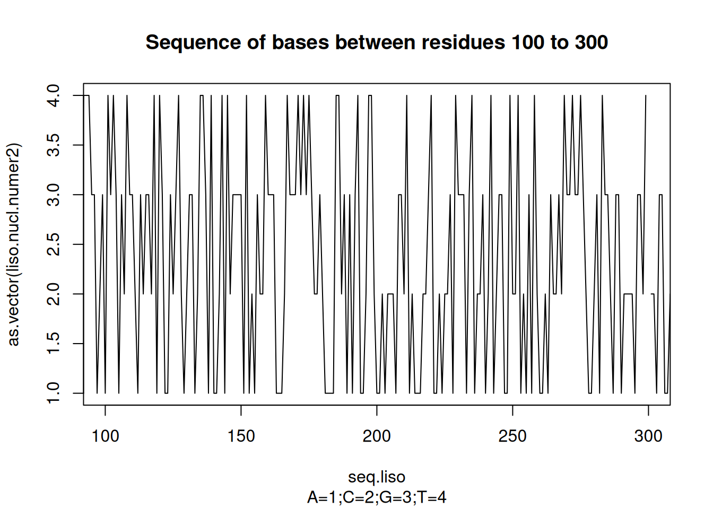
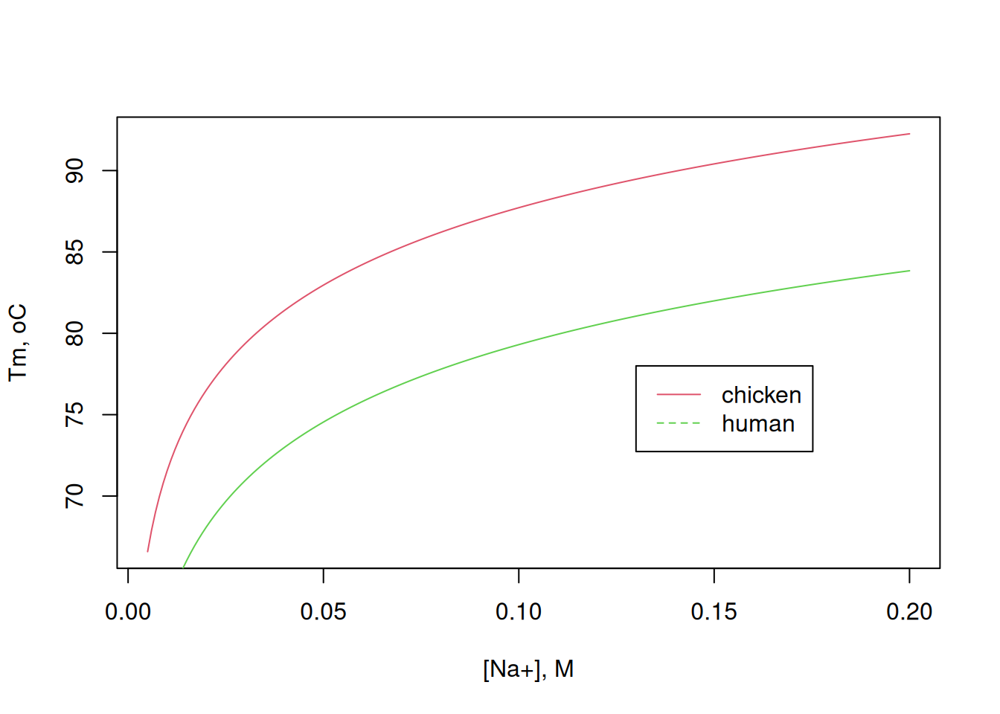

Nucleic acids can be considered as alphabetic sequences of 1 letter (bases), 2 letters (dinucleotide), or 3 letters (codon). Taking the example of chicken lysozyme:
Access the NCBI - National Center for Biotechnology Information database 1;
Select the Nucleotide database;
Enter the sequence of interest; ex: “hen egg” lysozyme”;
Select LYZF1 (or the NCBI sequence reference: NM_205281.2); Note: With the reference number, you can access the desired content from a simple Google search.
Search for the sequence referenced in FASTA
The site will display the nucleotide sequence for lysozyme, which can be copied/pasted into R, or exported as a file in “Send to….File”.
Now you need to convert this sequence of letters (string) into a base vector that can be read by R, and omitting the line break. This can be speeded up with the seqinr or TmCalculator package using the s2c function (converts string into a vector of strings; c2s does the opposite). Or also with the package stringr:
# Conversion of alphabetic sequence to base vectorlibrary(stringr)liso.nucl <-"GCAGTCCCGCTGTGTGTACGACACTGGCAACATGAGGTCTTTGCTAATCTTGGTGCTTTGCTTCCTGCCCCTGGCTGCTCTGGGGAAAGTCTTTGGACGATGTGAGCTGGCAGCGGCTATGAAGCGTCACGGACTTGATAACTATCGGGGATACAGCCTGGGAAACTGGGTGTGTGCCGCAAAATTCGAGAGTAACTTCAACACCCAGGCTACAAACCGTAACACCGATGGGAGTACCGACTACGGAATCCTACAGATCAACAGCCGCTGGTGGTGCAACGATGGCAGGACCCCAGGCT CCAGGAACCTTGTGCAACATCCCGTGCTCAGCCCTGCTGAGCTCAGACATAACAGCGAGCGTGAACTGCGCGAAGAAGATCGTCAGCGATGGAAACGGCATGAACGCGTGGGTCGCCTGGCGCAACCGCTGCAAGGGCACCGACGTCCAGGCGTGGATCAGAGGCTGCCGGCTGTGAGGAGCTGCCGCGCCCGGCCCGCCCGCTGCACAGCCGGCCGCTTTGCGAGCGCGACGCTACCCGCTTGGCAGTTTTAAACGCATCCCTCATTAAAACGACTATACGCAAACGCC"liso.nucl <-unlist(strsplit(liso.nucl, ""))# converts a single-word gene sequence into separate nucleotidesliso.nucl[1:100] # a sample of the result
[1] "G" "C" "A" "G" "T" "C" "C" "C" "G" "C" "T" "G" "T" "G" "T"
[16] "G" "T" "A" "C" "G" "A" "C" "A" "C" "T" "G" "G" "C" "A" "A"
[31] "C" "A" "T" "G" "A" "G" "G" "T" "C" "T" "T" "T" "G" "C" "T"
[46] "A" "A" "T" "C" "T" "T" "G" "G" "T" "G" "C" "\n" "T" "T" "T"
[61] "G" "C" "T" "T" "C" "C" "T" "G" "C" "C" "C" "C" "T" "G" "G"
[76] "C" "T" "G" "C" "T" "C" "T" "G" "G" "G" "G" "A" "A" "A" "G"
[91] "T" "C" "T" "T" "T" "G" "G" "A" "C" "G"
liso.nucl <- liso.nucl[liso.nucl !="\n"]# removes the line breaks from the previous resultliso.nucl[1:100] # a sample of the result without the "\n"
[1] "G" "C" "A" "G" "T" "C" "C" "C" "G" "C" "T" "G" "T" "G" "T" "G" "T" "A"
[19] "C" "G" "A" "C" "A" "C" "T" "G" "G" "C" "A" "A" "C" "A" "T" "G" "A" "G"
[37] "G" "T" "C" "T" "T" "T" "G" "C" "T" "A" "A" "T" "C" "T" "T" "G" "G" "T"
[55] "G" "C" "T" "T" "T" "G" "C" "T" "T" "C" "C" "T" "G" "C" "C" "C" "C" "T"
[73] "G" "G" "C" "T" "G" "C" "T" "C" "T" "G" "G" "G" "G" "A" "A" "A" "G" "T"
[91] "C" "T" "T" "T" "G" "G" "A" "C" "G" "A"
With the gene sequence in hand, one can evaluate a wide range of properties or manipulate the base vector, as referenced in some R packages (seqinr, DNASeqtest, haplotypes, rDNAse). You can also perform some simpler manipulation for the selected gene, as follows:
# Some manual calculations with the base sequencelength(liso.nucl[liso.nucl =="A"])
[1] 133
# quantifies the purine bases in the sequencetable(liso.nucl) # count of each nucleotide
liso.nucl
A C G T
1 133 173 174 109
library(seqinr)liso.nucl2 <-tolower(liso.nucl) # the seqinr library operates with# lowercase letters, requiring conversion of uppercase letters# obtained by FASTA# seqinr::count(liso.nucl2,1) # the same operation as above,# but with the seqinr library, and another call format# Other calculations# seqinr:: count(liso.nucl2, 1 )# seqinr::count(liso.nucl2,2) # content of dinucleotides# seqinr::count(lyso.nucl2,3) # trinucleotide content
Other sequence manipulations, such as GC pair content, dinucleotide sequence graph, conversion of the base sequence into a numeric sequence and its plotting, and obtaining the complementary base sequence, for example, can be obtained by:
# Note: can also be obtained by the s2n and n2s functions of the seqinr packageseq.liso <-seq(1:length(liso.nucl))plot(seq.liso, as.vector(liso.nucl.numer2),type ="l",xlim =c(100, 300), main ="Sequence of bases between residues 100 to 300",sub ="A=1;C=2;G=3;T=4")

# Obtaining complementary sequencecomp.liso.nucl <- seqinr::comp(liso.nucl)head(seqinr::c2s(comp.liso.nucl), 50) # shows the first
Regarding the physicochemical properties of nucleic acids, the relationship between the thermostability of duplex DNA and the GC pair content is well known, as explained by the empirical relationship (Creighton et al. 2010):
Where [Na\(^{+}\)] represents the molar concentration of sodium, f\(_{GC}\) the fraction of GC pairs in the sequence, L its length, and %\(_{f}\) the formamide content.
In this way, it is possible to predict the value of Tm (“melting temperature”) that indexes the thermostability of a polynucleotide sequence as a function of the salt content. Illustrating a comparison between the sequence of chicken and human lysozyme (NCBI ref. NC_000012.12), in the absence of formamide:
# Comparison of denaturation curves# For chicken lysozyme:gc.teor <- seqinr::GC(liso.nucl) # GC pair content of lysozymeNa.conc <-seq(0.005, 0.2, 0.001) # NaCl concentration, mmol/LTm.Na <- (81.5+16.6*log10(Na.conc / (1+0.7* Na.conc)) +41* gc.teor -500/length(liso.nucl))# Tm value for chicken# For human lysozymeliso.nucl.h <-"AGCCTAGCACTCTGACCTAGCAGTCAACATGAAGGCTCTCATTGTTCTGGGGCTTGTCCTCCTTTCTGTTACGGTCCAGGCAAGGTCTTTGAAAGGTGTGAGTTGGCCAGAACTCTGAAAGATTGGGAATGGATGGCTACAGGGGAATCAGCCTAGCAAACTGTAAGTCTACTCTCCATAATTCCAGAGAATTAGCTACGTATGGAACAGACACTAGGAGAGAAGGAAGAAGAAGAAGGG GCTTTGAGTGAATAGATGTTTTATTTCTTTGTGGGTTTTGTATACTTACAATGGCTAAAAACATCAGTTTGGTTCTTTATAACCAGAGATACCCGATAAAGGAATACGGGCATGGCAGGGGAAAATTCCATTCTAAGTAAAACAGGACCTGTTGTACTGTTCTAGTGCTAGGAAGTTTGCTGGGTGCCTGAGATTCAATGGCACATGTAAGCTGACTGAAAGATACATTTGAGGACCTGGCAGAGC TCTCTCAAGTCCTTGGTATGTGACTCCAGTTATTTCCCATTTTGAACTTGGGCTCTGAGAGCCTAGGTGATGCAGTATTTTTCTTGTCTTCAAGTCCCCTGCCGTGATGTGGGATTTTTATTTTTATTTTTATTTTATTTTATTTTATTTTTAAAGACAGTCTCACTGTGTGGCCCAGGCTGGAGTGCAGTGGCATGATCTCAGCTCACTGCAACCTCTGCCTTCTGGGCTCAAGTGATTCT CGTGCTTCAGCCTTCTGAGTAGCTGTGACTACAGGTGTGTACCACCACACCCAGCTAATTTTTTGTATTTTCAGTACAGATGGGGTTTCACCATGTTGGCCAAGCTGGTCTTGAACTCCTGGCCTCAAATGATCTGCCCACCTCAGCCTCCCAAAGTGGTAGGATTACAGGTGTGAACCACTGCACCCAGCCGACATGGGATTTTTAACAGTGATGTTTTTAAAGAATATATTGAATTCCCTACA CAAGAGCAGTAGGAACCTAGTTCCCTTCAGTCACTCTTTGTATAGGATCCGAAACTCAGCATGAAATGTTTTATTATTTTTATCTACTCTACTTGATTAACTATCTTTCATTTTCTCCCACACAATTCAAGATGTGCCATGAGGAAAAGTTATTTTATAGTTTAGTACATAGTTTGTCGATGTAATAATCTCTGTAGTTTTCAGATTGAATTCAGACATTTCCCCTCAATAGCTATTTTTGA ATGAATGAGTGAAGGGATGAATCACGGAATAGTCTTGTTTTCAAGATTCTAACTTGATATCCAAATTCACCTTTAGATATTATAAGAAAATTTCTATCAGAAAATCCTTATGTTTTTCTGATTAAAAAAAGCATTTTTCCATCAGCCTATGTATCTGCTATGAATTTACAAAATCTACTCAACAGCTCTGTTGATTTTTCTGTTCTTGGCTGAATGTTGCCTGAGGGATGGGAGCACGGGAAGG GTAAAAGCAATGGAACAAACATGTATTTTAATATTTTAAAAGTATGTTATATTGTTCGTTGGTGTTACAAGATGATTTGCATTACAAAAGGATTCTCTTACAAGTCCCTTATCTTAACACTAAAGTGCTAAGATATTTTATAAGTAAATCTTTATACTTATAAAACAAATCAGTAAAATAGAAGTAGCTAAGTAGAACTGATTTTGCTATAGAGTATAAGTCACTTAGTGTTGCTGTTTATTAC TAAAAATAAGTTCTTTTCAGGGATGTGTTTGGCCAAATGGGAGAGTGGTTACAACACACGAGCTACAAACTACAATGCTGGAGACAGAAGCACTGATTATGGGATATTTCAGATCAATAGCCGCTACTGGTGTAATGATGGCAAAACCCCAGGAGCAGTTAATGCCTGTCATTTATCCTGCAGTGGTAAGACAAGCTAATATTTGACCAATCTGGTTATACTTACAAGAATTGAGACTCAATACA AATGAAAAAGCCTTGAAAGGTTCATGAGGGACCTAGAAAAACTACATCTCAACTTCCAGAAAGTCATTATTATTTTCCTCATAATTCCCTGAGTAAGAAATTAAAGAAGTGGTATCATAAAAGGTTGATGTTTTTTAATATACAGAAGTTTCTGGAATGACCTATTAATTTACTGTCAATGCCTTACTGATGCTTTGTCCAGAACAATGCCATTGCTCCTGCTTACTTTGGGGAGGGTTTTGG GATAATTTAGTTGTATGGTCCTTTTTCAATTGTTTTACTTTTTTTTTTATGAAATGTTCTAAATGTATAGAAAATTAGAGACATTAGTATAATAAACAGCCATATGCCCATTATGCACTTTAAAAGTTGTTAACATTTTGCCATAGTTGCTTCTTCTATGCCTTTTTTTTTTTTTTTTTTTTTTTTTTTTTTTTGCTGAGAGTTTTTTGTTTGGTTTTGTTTTGTTTTATTTTGAGACAGGGTCT CCCTGTCCCCAGGCTGTAGTGCAGTGGCACCATCACAGCTCACTGCAGCCTCAAGTGATCATCCCACCACAGCCTCCCCAAGTAGCTGGACTACAGGTGTGCACCACCATGCCTGGCAAATTTTTGAAATTTTTAGTACAGGCAAATTCTGTGTTGCCCAGGCTGGTCTTGAACTCCTGAGTTCAAGCAATCTTCCCACCTCAGCCTCCTTAAGTGCTGGAATTACAGGCGTTAGCCACTGTA CCTGGCTACTGCTGAGAGACTTTTAAGTGAATTAGGAACATGATGATATTCCATTTCTAAATTCTTTAGTTTACATCTTCAAAAAATACAGTTCCTGTAGAATTATTATTGTAAATAACAAATTAACTTAAGGATTTATTTATTTGGAGTGAAAACAAATATTTTACTGAACTCATAAAAATAGAAATACCATGTGGAATCCTCAGTGTCAAAAATATTGCAGAAATCTTGCAAAGTTGATATTATTAAATTGTTAAATATTAAAATTCCCAATAAAGAACATTAATCTTATTTCTAAAATCCAGTTAATTAAAAAAATTTATATTATATAATAATATTTGGTCATTAAAATAAAAATTAGAAAATACAAATAAGAAAAATAACACCCATAATCTTACTACCCAGAGGTTTATAACCATGGGTAAATTCTGGTATATTCTTCCAGAATGTATATCAATCATGTGTATGAATGTTAAATTATATCATAC ACATATAAACCCACATACAAACATGTAAATACTGTGTGCTTTTGCAAAAATTAAATTGTATTATACACACGGCTTTACAATTTGCTTCTTACACACAAAATTATTTGCATGTCAGCAAATACAAATCGGTTTTTAATGATCTTTTGCTCCATTTTCCAGATGAGAAAAAAATACAAATCTGTATCATCATTTTAAAAGAATGACTAGAATTTTAATATATGAATATTCTATAATTTACTGATCCAATTGTTACTATTGAGCACTTAGGTTGTTTCCATTTTTCCCTCATAAATTGCTATGAATAGCTTTTTGTATACATCTTTGGGTGCATTTCTTATTTCTTTTGGATAAATTTTCAATAATAGAACTGCTGAGTAAAATATCACTAGGTGTTTTTTTACAGTGTCTAGTGCAAAGAAGACCTTTAATCATTTTGTTAATACTTCCAGAGCTTCCAATGACTTTGGTAAATGAAGAAAAAAATGCTT CATTTCATGCTGAATGGGAGAGAATGAAGAGAGTTTTCCCCAACAATTACACATATATGGACTCATAGAAAATAATATCTTACCATTCTTTCCACAGCCTAACAGAAAAAAGCTGGCTAAACCTAAATTTAAAATAAAATATCTATTAAAGTTTTTATTCCTTACCACCTGTCTTTCAGCTTTGCTGCAAGATAACATCGCTGATGCTGTAGCTTGTGCAAAGAGGGTTGTCCGTGATCCACAAGGCATTAGAGCATGGTATGTTTTAAGTGTTAAAAGGGAAAACTATCTTACTCTACTGTTGATATATACAATGAGAGCAGACTTTTAAAGACCAAAGTATGCTAATGACACCTCAAAATTGCAGCTTTTGGCTTATGCTAAATGATGTATTACCTACATCCTTGAAGAAACAATCTACTTTAACTGATCCAGAATCTTACTCTTTTACTCCTCAATTTATTTTAGGGGATTTCTAGAGTTTTAAGA TGCTTCACACTCTATCAGTTCCTTGTCATATCTTGAAATTCTTTTTAGAATAAGTAAGTGTGGGCCGGGCACAGTGGCTCACGCCTGTAATCCCAGCACTTTGGGAGACCGAGGCAGATGGATCACCTGAGGTCAGGAGTTCGAGACCAGCCTGCCTAACATGGCAAAACCCCATCTCCACTAAAAATACAAAAAATTAGCTGGGTGTGGTGGCAGGTGCCTGTAATCCCAGCCACTCGGGAGGCT GAGGCAGGAGACTTGCTTGAACCCGGGAGGTGGAGGTTGCAGAGGATTGCGCCATTGTACTTCAGCCTGGGCGACAGAGTGAGACTCTGTCTCAAATAAATACATAAAAAATAAAATGTGGAATTCACTTTGCAGTTGCTGCTGTACAACGCACATTACTCAATCTTTATGTTCGGCATTCTATGCTCTACTGAGAAATTTGGGTAGGAGTGAAGTATTTTGTATACATATCTTCATTTAATAAAT AGCAATAGCTGGGTCTATCTTACTATTTTATCTATTGATAAAATATTTTGTTTCCCCAAGGAGTGCGAAGTATGTATATTACAATGAAGATATGTTTTAACCTTTCACCATTTGCTTCATCTTTTTCTACAGGGTGGCATGGAGAAATCGTTGTCAAAACAGAGATGTCCGTCAGTATGTTCAAGGTTGTGGAGTGTAACTCCAGAATTTTCCTTCTTCAGCTCATTTTGTCTCTCTCACATTAAG GGAGTAGGAATTAAGTGAAAGGTCACACTACCATTATTTCCCCTTCAAACAAATAATATTTTTACAGAAGCAGGAGCAAAATATGGCCTTTCTTCTAAGAGATATAATGTTCACTAATGTGGTTATTTTACATTAAGCCTACAACATTTTTCAGTTTGCAAATAGAACTAATACTGGTGAAAATTTACCTAAAACCTTGGTTATCAAATACATCTCCAGTACATTCCGTTCTTTTTTTTTTTGAG ACAGTCTCGCTCTGTCGCCCAGGCTGGAGTGCAGTGGCGCAATCTCGGCTCACTGCAACCTCCACCTCCCGGGTTCACGCCATTCTCCTGCCTCAGCCTCCCGAGTAGCTGGGATTACGGGCGCCCGCCACCACGCCCGGCTAATTTTTTGTATTTTTAGTAGAGACAGGGTTTCACCGTGTTAGCCAGGATGGTCTCGATCTCCTGACCTTGTGATCCACCCACCTCGGCCTCCCAAAGTGCTGG GATTACAGGCGTGAGCCACTGCGCCCGGCCACATTCAGTTCTTATCAAAGAAATAACCCAGACTTAATCTTGAATGATACGATTATGCCCAATATTAAGTAAAAAATATAAGAAAAGGTTATCTTAAATAGATCTTAGGCAAAATACCAGCTGATGAAGGCATCTGATGCCTTCATCTGTTCAGTCATCTCCAAAAACAGTAAAAATAACCACTTTTTGTTGGGCAATATGAAATTTTTAAAGGA GTAGAATACCAAATGATAGAAACAGACTGCCTGAATTGAGAATTTTGATTTCTTAAAGTGTGTTTCTTTCTAAATTGCTGTTCCTTAATTTGATTAATTTAATTCATGTATTATGATTAAATCTGAGGCAGATGAGCTTACAAGTATTGAAATAATTACTAATTAATCACAAATGTGAAGTTATGCATGATGTAAAAAATACAAACATTCTAATTAAAGGCTTTGCAACACA"liso.nucl.h <-unlist(strsplit(liso.nucl.h, ""))# convert gene sequence from a word into separate nucleotidesliso.nucl.h <- liso.nucl.h[liso.nucl.h !="\n"]# remove line break from previous outputgc.teor.h <- seqinr::GC(liso.nucl.h) # GC pair content of human lysozymeTm.Na.h <- (81.5+16.6*log10(Na.conc / (1+0.7* Na.conc)) +41* gc.teor.h -500/length(liso.nucl.h))# Tm value for human# Simulation curvesplot(Na.conc, Tm.Na,type ="l", col =2,xlab ="[Na+], M", ylab ="Tm, oC")lines(Na.conc, Tm.Na.h, type ="l", col =3)legend(x =0.13, y =78, legend =c("chicken", "human"),col =c(2, 3), cex =1, lty =c(1, 2))

Comparison between the simulated Tm curves for the nucleotide sequence of chicken lysozyme and human lysozyme, as a function of the NaCl content of the medium.
Note how the difference in GC content has a direct effect on the thermostability of double-stranded DNA. One note: although the range of Tm values reported in the literature for lysozyme is around 74\(^o\)C, this value refers to the cooperative denaturation of the enzyme in aqueous solution, and not to the unfolding of its duplex DNA gene sequence.